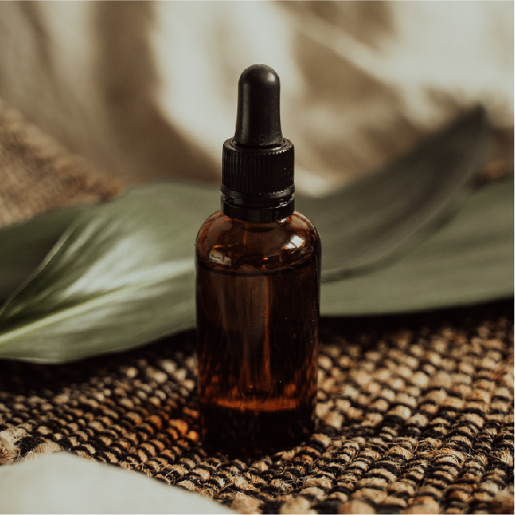
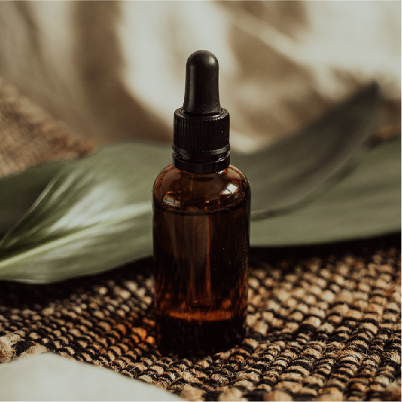

Skin Care
Una forma de amarte es cuidando tu piel
 

Ácido Salicílico
El ácido salicílico tópico alivia el acné al reducir la hinchazón y enrojecimiento y abrir los poros de la piel obstruidos, lo que permite que las espinillas se sequen. Alivia otras enfermedades de la piel al suavizar y aflojar la piel seca, escamosa o engrosada para facilitar su desprendimiento o eliminación.
Ya que el ácido salicílico actúa aflojando y rompiendo las adherencias en las células de las capas externas de la piel, provoca una estimulación mediante la exfoliación de la piel y el desbloqueo de los poros. Este ácido también es lipófilo, lo que significa que puede penetrar la grasa los poros obstruidos, obteniendo como resultado una limpieza profunda del cutis. Además, reduce la secreción de sebo, lo cual puede ayudar, en gran medida, a reducir el acné, mientras actúa como un remedio que desinflama las imperfecciones.
Buy It NowSimilar Products

Niacinamida
Controla la grasa de la piel y regula la actividad sebacea...
Vitamina C
Hidrata tu piel de manera profunda, sin dejar la piel grasa...

Peeling Solution
LImpia y exfolia la piel de forma profunda y sin lastimarla...